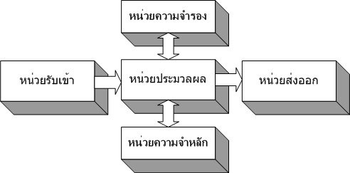

1. อินพุต – เอาท์พุต ( Input – Output ) เป็นส่วนของคอมพิวเตอร์ที่ใช้ติดต่อกับโลกภายนอกโดยรับ-ส่งข้อมูลกับคอมพิวเตอร์เพื่อให้กลไกภายในตรับไปปฏิบัติโดยผ่านทางอินพุตทำให้ผู้ใช้สามารถรับทราบผลการปฏิบัติงานของเครื่องได้ ตัวอย่างของอุปกรณ์อินพุต ได้แก่ แป้นพิมพ์ ตัวขับดิสก์ เป็นต้น และตัวอย่างของอุปกรณ์เอาท์พุต ได้แก่ จอภาพและเครื่องพิมพ์ เป็นต้น
2. หน่วยประมวลผลกลาง หรือ ซีพียู ( Central Processing Unit : CPU ) เป็นส่วนที่ทำหน้าที่ปฏิบัติตามคำสั่งที่ได้รับมาจากอินพุต หรือนำเอาข้อมูลจากส่วนอินพุตมาประมวลผล เพื่อให้ได้ผลลัพธ์ที่ต้องการ การปฏิบัติงานตามคำสั่งหรือการประมวลผลนี้เราเรียกว่าการเอ็กซีคิ้ว(execute)การเอ็กซีคิ้วชุดคำสั่งหรือโปรแกรมเรียกว่าการรัหรืออาจกล่าวว่าโปรแกรมถูกเอ็กซีคิ้ว
หน่วยประมวลผลกลางเราสามารถแบ่งย่อยลงไปได้อีก 2 ส่วนคือ
-หน่วยควบคุม ( control unit )มีหน้าที่ควบคุมการทำงานของอุปกรณ์ต่าง ในระบบทั้งหมดให้มีการทำหน้าที่ให้ถูกต้อง
-หน่วยคำนวณ ( arithmetic logic unit ) มีหน้าที่ในการคำนวณทางด้านคณิตศาสตร์ เช่น บวก ลบ คูณ หาร และงานทางด้านตรรกศาสตร์ เช่น AND OR นอกจากนี้ยังสามารถทำโอเปอร์ชั่นอื่นๆ อีก เช่น การเลื่อนบิต( shift ) หรือการทำคอมพลีเมนต์ ( complement ) เพื่อสลับค่าตัวเลขจากบวกเป็นลบ หรือจากลบเป็นบวก เช่น -5 หรือ +5 เป็นต้น สำหรับหน่วยควบคุมมีหน้าที่ควบคุมการทำงานส่วนต่างๆ เป็นไปตามลำดับขั้นตอนที่ถูกต้อง อาศัยเทคโนโลยีก้าวหน้าในปัจจุบัน เราสามารถผลิตซีพียู ลงบนแผงวงจรรวมหรือไอซี (Integrated Circuit) ที่มีขนาดเล็ก ๆ ได้ และเราเรียกกันว่าไมโครโปรเซสเซอร์ หรือ โปรเซสเซอร์
3.หน่วยความจำ (Memory)เป็นอุปกรณ์ที่สร้างขึ้นเพื่อสามารถเก็บข้อมูลหรือคำสั่งที่คอมพิวเตอร์ ต้องการใช้เอาไว้ ดังนั้นหน่วยความจำจึงเป็นสิ่งจำเป็นมาก ในคอมพิวเตอร์ขนาดใหญ่ๆ อาจมีหน่วยความจำขนาดหลายเมกกะไบต์(106 ไบต์) หรือ หลายจิกกะไบต์ (109 ไบต์ ) เราอาจแบ่งหน่วยความจำออกเป็น 2 ประเภทใหญ่ คือ
– หน่วยความจำปฐมภูมิเป็นหน่วยความจำที่ติดต่อกับซีพียูโดยตรงมี 2 ชนิดคือ แบบที่ข้อมูลที่เก็บไว้ไม่สูญหายแม้ไม่มีไฟฟ้าป้อน เป็นหน่วยความจำที่เรียกกันทั่วไปว่า รอม ( Read Only Memory : ROM ) ข้อมูลที่เก็บไว้ภายในถูกสร้างขึ้นในขณะที่สร้างหน่วยความจำจากโรงงาน ผู้ผลิต และไม่สามารถแก้ไขได้ (แต่ในปัจจุบันหน่วยความจำประเภทนี้ได้รับการพัฒนาให้สามารถบันทึกและลบข้อมูลภายในได้ แต่ต้องอาศัยอุปกรณ์พิเศษเฉพาะหน่วยความจำชนิดนี้ ได้แก่ programmeble ROMหรือ PROM และ erasable PROM หรือ EPROM ) ส่วนหน่วยความจำอีกชนิดหนึ่งคือ แรม ( RandomAccess Momery , RAM ) ข้อมูลที่เก็บไว้จำเป็นต้องใช้กระแสไฟเพื่อรักษาข้อมูลให้คงอยู่ ถ้าไม่มีกระแสไฟฟ้าข้อมูลที่เก็บไว้ก็หายไปหมด
- หน่วยความจำทุติยภูมิหน่วยความจำประเภทนี้ เราจะไม่ถือเป็นส่วนหนึ่งของหน่วยประมวลผล แต่เป็นส่วนหนึ่งของอุปกรณ์อินพุต-เอาท์พุตมากกว่า ตัวอย่างของหน่วยความจำ ประเภทนี้ได้แก่ ดิสก์ เทป เป็นต้น เพื่อให้เกิดความเข้าใจในการศึกษาระบบปฏิบัติการ การจัดแบ่งโครงสร้างของระบบคอมพิวเตอร์อาจแตกต่างจากที่เคย พบมา
เราจะแบ่งโครงสร้างของระบบคอมพิวเตอร์เป็นดังนี้
1. ระบบภายในในส่วนนี้ประกอบไปด้วย ซีพียู และหน่วยความจำปฐมภูมิ ซึ่งต่อไปนี้จะเรียกส่วนนี้ว่าเป็นเครื่องคอมพิวเตอร์หรือ คอมพิวเตอร์
2. ระบบภายนอกในส่วนนี้คือ ส่วนอุปกรณ์ อินพุต-เอาท์พุต และหน่วยความจำทุติยภูมิ ทั้งหมดนี้เราเรียกว่าเป็นอุปกรณ์รอบข้าง (peripheral)เป็นการแสดงการติดต่อข้อมูลในระบบคอมพิวเตอร์ ซึ่งยังคงเหมือนกับ แต่ลดความยุ่งยากลง เพื่อให้ดูเข้าใจง่ายขึ้น ในส่วนของอุปกรณ์อินพุตจะรับข้อมูล หรือ รับคำสั่ง แล้วส่งให้ซีพียูประมวลผล เมื่อซีพียูมีข้อมูลจะส่งกลับให้ผู้ใช้ ซีพียูจะส่งข้อมูลไปทางอุปกรณ์เอาท์พุต ในการทำงานของซีพียูบางครั้งซีพียูอาจส่งข้อมูลไปเก็บ เอาไว้ในหน่วยความจำทุติยภูมิ เช่น ดิสก์ ในลักษณะนี้ดิสก์จะทำหน้าที่เป็นอุปกรณ์เอาท์พุตและในทำนองเดียวกัน ซีพียูอาจรับหรือต้องการข้อมูลมาจากดิสก์เช่นเดียวกัน ซึ่งในกรณีนี้ดิสก์จะเป็นอุปกรณ์อินพุต นั่นคือ หน่วยความจำทุติยภูมิสามารถเป็นได้ทั้งอุปกรณ์อินพุต และ เอาท์พุตการที่เราแยกหน่วยความจำปฐมภูมิกับหน่วยความจำทุติยภูมิออกกันเนื่องจากว่าหน่วยความจำปฐมภูมินั้น ติดต่อกับซีพียูโดยตรงไม่ต้องผ่านอุปกรณ์อื่น แต่สำหรับหน่วยความจำทุติยภูมิเป็นอุปกรณ์ภายนอกแยกออกไป และ ข้อสำคัญก็คือ การติดต่อระหว่างอุปกรณ์อินพุต-เอาท์พุตและหน่วยความจำทุติยภูมิต้องมีการอุปกรณ์ช่วยเหลือ
การจัดการหน่วยความจำ
การจัดการหน่วยความจำเป็นหน้าที่อีกประการหนึ่งของ OS หน่วยความจำเป็นองค์ประกอบหนึ่งในการพิจารณาขีด ความสามารถของเครื่องคอมพิวเตอร์ ถ้าคอมพิวเตอร์มีหน่วยความจำมาก ขีดความสามารถในการทำงานก็จะเพิ่มขึ้นด้วย โปรแกรมที่มีความสลับซับซ้อนและมีความสามารถมากมักต้องการหน่วยความจำปริมาณมากด้วย แต่หน่วยความจำเป็นทรัพยากรที่มีราคาแพง และในเครื่องคอมพิวเตอร์ขนาดเล็กหน่วยความจำมีขนาดจำกัด ทำให้เราไม่สามารถขยายขนาดหน่วยความจำได้มากตามที่ต้องการ จึงจำเป็นต้องใช้หน่วยความจำที่มีอยู่ให้เกิดประโยชน์สูงสุด เพื่อความสะดวกของผู้ใช้ เราจึงยกงานการจัดการหน่วยความจำนี้ให้เป็นหน้าที่ของ OS เช่น ตรวจดูว่าโปรแกรมใหม่จะถูกนำไปวางไว้ในหน่วยความจำที่ไหน? เมื่อใด? หน่วยความจำไหนควรถูกใช้ก่อนหรือหลัง? โปรแกรมไหนจะได้ใช้หน่วยความจำก่อน? การจัดการหน่วยความจำของ OS นั้นมีการใช้มาตรการหรือยุทธวิธีในการจัดการอยู่ 3 ประการ
1. ยุทธวิธีการเฟตซ์ (fetch strategy)
2. ยุทธวิธีการวาง (placement strategy)
3. ยุทธวิธีการแทนที่ (replacement strategy)
โครงสร้างระบบคอมพิวเตอร์
องค์ประกอบของคอมพิวเตอร์
วงจรการทำงานของคอมพิวเตอร์
ความหมายและความเป็นมา
คอมพิวเตอร์
สรุป โครงสร้างระบบคอมพิวเตอร์
ภาษาคอมพิวเตอร์
ข้อมูล ผู้จัดทำ